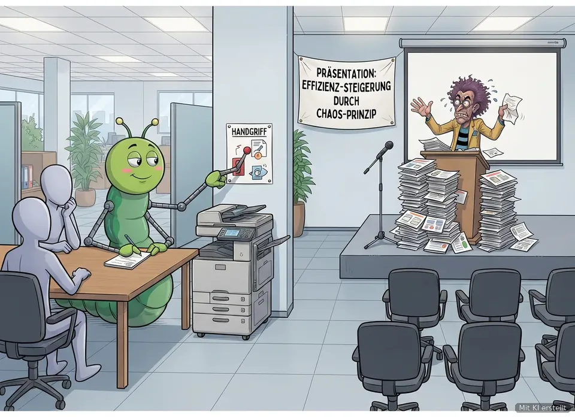

Der Montags-Wurm · 2. November 2026
Umziehen, ohne dass etwas verloren geht
SALVE! Der Prozesswurm ist umgezogen, und er war nicht der Einzige. Viele Betriebe packen gerade ihre Rechnungen in ein neues System, weil die E-Rechnung kommt. Diese Woche geht es darum, wie ein Ablauf umzieht, ohne dass unterwegs etwas verloren geht.
In eigener Sache: Der Prozesswurm ist umgezogen
Seit dem 28. Oktober liegt alles an einem Ort: auf www.prozesswurm.de. Dort findest du die Lernwerkstatt, alle Ausgaben des Montags-Wurms, Lieder und Videos unter „Hören und sehen“ und neu die Seite „Für Teams“ mit fertigen Lernpfaden zum Weiterschicken.
Die Seite ist selbst gebaut statt mit Google Sites: spürbar schneller, ohne Cookies, ohne Werbung, ohne Auswertung durch Google. Sie lässt sich mit der Tastatur bedienen, hat eine gut lesbare Schrift, eine helle und eine dunkle Ansicht und eine Suche über alles. Auf der Startseite tippst du an, was dich gerade nervt, und bekommst einen Handgriff für morgen.
Ehrlich gesagt: Wer in der Lernwerkstatt Fortschritt gespeichert hatte, sieht ihn unter der neuen Adresse vielleicht nicht mehr. Hier steht, was dann hilft. Und perfekt ist noch nicht alles. Der Prozesswurm kriecht ja auch noch und ist kein Schmetterling.
Was gefällt dir, was fehlt, wo hakt es? Schreib an info@prozesswurm.de.
1. Aktuelles aus dem Prozessmanagement
Die E-Rechnung kommt: Ein neues System ist noch kein neuer Ablauf

Mit KI erstelltIn zwei Monaten wird es ernst. Ab dem 1. Januar 2027 müssen Unternehmen mit mehr als 800.000 Euro Umsatz im Vorjahr ihre Rechnungen an andere Firmen als E-Rechnung schicken. Alle anderen folgen ein Jahr später. Eine E-Rechnung ist eine Datei, die ein Programm direkt lesen kann. Ein PDF im Anhang reicht dafür nicht.
Viele Betriebe fühlen sich trotzdem gut aufgestellt. In einer Umfrage des Anbieters Quadient halten 75 Prozent ihre Rechnungsabläufe für digital, aber nur 6 Prozent sehen sich als vollständig bereit. Eine Studie der Universitäten Potsdam und Erlangen-Nürnberg kommt zu einem ähnlichen Bild: 71 Prozent der meist mittelständischen Betriebe haben noch keine konkreten Schritte eingeleitet. Beides fasst ein Beitrag in ChannelPartner vom 29. Oktober zusammen, geschrieben von einem Softwareanbieter.
Was das mit deinen Abläufen zu tun hat
Ein neues System ist wie eine neue Wohnung. Wer einfach alle Kisten ungeöffnet hineinträgt, hat danach dasselbe Durcheinander, nur an einem anderen Ort. Bei Rechnungen heißt das: Wird heute ausgedruckt, abgezeichnet und in eine Excel-Liste übertragen, passiert das morgen eben am Bildschirm. Schneller wird dadurch nichts.
Der bessere Weg: erst aufschreiben, wie der Ablauf heute wirklich läuft, dann entscheiden, was mitkommt. Genau dafür ist eine Prozessbeschreibung da. Und dabei fällt oft auf, dass ein Schritt nur noch existiert, weil ihn nie jemand gestrichen hat.
Handgriff der Woche: die Umzugsliste
- Aufschreiben, wie es heute läuft. Jeden Schritt, auch den Zettel am Bildschirm und die Liste, die „nur die Müller“ pflegt.
- Pro Schritt entscheiden. Mitnehmen, wegwerfen oder neu bauen?
- Pro Kiste einen Namen und ein Datum. Wer packt im neuen System aus, und bis wann?
| Schritt heute | Entscheidung | Wer packt aus? | Bis wann? |
|---|---|---|---|
| Rechnung kommt als PDF per Mail | neu bauen: E-Rechnung | Leitung Buchhaltung | 30. November |
| Rechnung ausdrucken und abzeichnen | wegwerfen | – | – |
| Freigabe durch die Teamleitung | mitnehmen | Teamleitung | 15. Dezember |
| Excel-Liste „offene Posten“ | klären | keiner weiß es | Lücke |
Auch ein Notausgang ist ein Ablauf
Umziehen muss man manchmal auch, wenn man gar nicht will. Laut Bitkom bereiten sich 40 Prozent der Unternehmen, die digitale Technik aus dem Ausland beziehen, darauf vor, wichtige Anbieter und Systeme bei Bedarf auszutauschen (602 befragte Unternehmen, berichtet am 28. Oktober). Wer seine Abläufe aufgeschrieben hat, kann leichter wechseln. Wer sie nur im Programm hat, zieht immer mit dem Programm um.
Der Handgriff: Schreib für jedes wichtige Programm eine Zeile dazu: Welche Daten stecken drin, und wie bekommen wir sie heraus?
Quellen: kostenlose-erechnung.de, Stand 5.10.2026 · ChannelPartner, 29.10.2026 · Mittelstand Café, 28.10.2026
2. Märkte und Nachrichten
KI am liebsten aus Deutschland, Ämter ziehen online um
Bitkom: Fast alle wollen KI aus Deutschland, kaum einer will dafür mehr zahlen. Zum Digital-Gipfel hat der Branchenverband Bitkom am 2. November eine Umfrage vorgestellt. 96 Prozent der Unternehmen würden KI am liebsten von deutschen Anbietern beziehen. 64 Prozent wollen dafür aber keine Abstriche machen, also weder mehr zahlen noch auf Funktionen verzichten. US-Anbieter bevorzugen nur noch 41 Prozent, vor einem Jahr waren es 51 Prozent. Befragt wurden je rund 600 Unternehmen ab 20 Beschäftigten.
Quelle: Bitkom, 2.11.2026
Staatsmodernisierung: erste Ergebnisse, viel Arbeit übrig. Die Bundesregierung hat dem Bundestag einen Zwischenbericht vorgelegt. Von 23 großen Vorhaben sind 5 abgeschlossen. Der Aufwand, den Firmen für Vorschriften treiben müssen, ist nach Angaben der Regierung unterm Strich um rund 1,7 Milliarden Euro gesunken (Stand 30. Juni 2026). Und rund 66 Millionen Menschen können sich inzwischen online an- und ummelden.
Quelle: Deutscher Bundestag, hib, 12.10.2026
Was das für dich heißt: Neue Werkzeuge kommen, ob aus Deutschland oder anderswo, und auch die Ämter stellen um. Wer weiß, wie die eigenen Abläufe laufen, kann ein Werkzeug austauschen, ohne jedes Mal von vorn anzufangen.
3. Zahlen und Erkenntnisse
Wechsel, Abhängigkeit und Ämter in Zahlen
- 71 Prozentder meist mittelständischen Betriebe haben für die E-Rechnung noch keine konkreten Schritte eingeleitet (Studie Universität Potsdam und FAU Erlangen-Nürnberg, zitiert am 29.10.2026). Heißt: Zwei Monate vor dem Stichtag steht bei vielen noch der ganze Umzug an.
- 87 Prozentder Unternehmen, die digitale Technik aus den USA nutzen, fühlen sich davon abhängig, 47 Prozent sogar stark (Bitkom, 30.10.2026, 602 Unternehmen). Heißt: Ein Plan für den Wechsel gehört zur Grundausstattung.
- 42 Prozentder Unternehmen nennen Programme, die nicht miteinander verbunden sind, als Problem im Umgang mit Behörden (Bitkom, 12.10.2026, 603 Unternehmen). Heißt: Wo Systeme nicht zusammenpassen, tippt am Ende ein Mensch alles zweimal ab.
Quellen: ChannelPartner, 29.10.2026 · Bitkom, 30.10.2026 · Bitkom, 12.10.2026
4. Sehenswert
Re: Das ewige Pendeln des EU-Parlaments (ARTE, 31 Min.)
Jeden Monat zieht das Europäische Parlament für knapp vier Tage von Brüssel nach Straßburg, mit Akten, Technik und Personal. Und danach wieder zurück. Die Reportage fragt, ob sich Europa diesen Wanderzirkus noch leisten kann.
Warum sich die 31 Minuten lohnen: Hier sieht man, was ein Umzug kostet, wenn er zur Gewohnheit geworden ist. Ein Ablauf, den keiner mehr erfunden hat, den aber auch keiner abschaffen kann. In der ARTE-Mediathek bis 16. Februar 2027.
5. Aus der Lernwerkstatt
Erst fragen, dann schulen
Zum Umzug passt die Lektion „Erst fragen, dann schulen: andere fit machen für einen neuen Ablauf“ aus Stufe B2. Dauer: sieben Minuten. Ein kleiner Auszug:
Zum Merken: Wer vorher fragt, schult nicht am Bedarf vorbei. Ein kurzes Häppchen für alle schlägt einen langen Tag für niemanden.
Mini-Übung: Denk an eine Schulung, die wenig gebracht hat. Was hättest du vorher gebraucht? Welche drei Dinge hättest du wirklich wissen müssen?
Teste dich: Wer bekommt bei einem neuen Ablauf die ausführliche Vertiefung? Die Auflösung steht in der Lektion.
Dein Fortschritt zieht mit: der Speicherlink
Jeden Montag wartet auf der Startseite der Lernwerkstatt eine neue Lektion der Woche. Und damit dein Fortschritt nicht noch einmal verloren geht: Unter „Fortschritt mitnehmen“ tippst du auf „Speicherlink kopieren“. Den Link legst du als Lesezeichen ab oder schickst ihn dir selbst. Öffnest du ihn auf einem anderen Gerät, ist dein Stand sofort wieder da. Alles kostenlos und ohne Anmeldung.
6. Lied oder Kurzvideo der Woche
Kurzvideo: Wir verändern mit dir die Welt
Sechs Sekunden Schwung für den Montag: Der Prozesswurm dreht eine Runde, die Pfeile zeigen nach vorn. Die Botschaft passt zum Umzug: Veränderung fängt nicht beim neuen System an, sondern bei dir.
Alle Lieder und Videos findest du auf prozesswurm.de unter „Hören und sehen“.
7. Zum Schluss: Ein Satz zum Mitnehmen
„Die größte Gefahr in Zeiten des Umbruchs ist nicht der Umbruch selbst, sondern mit der Logik von gestern zu handeln.“
Der Prozesswurm nickt: Deshalb erst die Umzugsliste, dann das neue System. Doktor Kuddelmuddel ist begeistert: „Logik von gestern? Ich habe nicht mal Logik von heute. Damit bin ich ja völlig zukunftssicher.“
Dieser Newsletter erscheint weiterhin jeden Montag. Vielen Dank für deine Zeit. Feedback, Anmerkungen oder Themenvorschläge? Schreib mir gern an info@prozesswurm.de.
Dein Prozesswurm